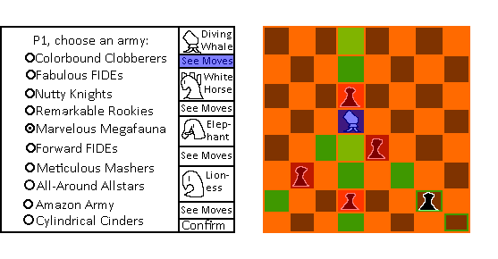
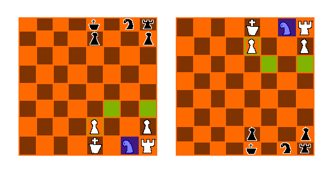

Chess With Many Different Armies
It's Chess, but with a variety of different starting armies. Both players get to choose which army to start with. Proceeds with standard chess rules, but with possible fairy pieces, depending on the army.
Probably will not have AI.
Genre: Board Game
Platform: Ideally both desktop and mobile web.
There is no story, the gameplay is mostly based on standard chess.
Aesthetics: Simplistic piece forms, both because I like that appearance.. and that I'm a poor artist.
Mockups:

Other: I'll be using this with just JS & Browser DOM. I might end up completely changing up what this is after I finish generic piece and display code...
Isaac Dunlap, GDD sophomore, programmer,
avid CaveStory fan, likes the taste of coffee but unaffected by caffine, loves eating baked potatos plain, favorite food is red velvet muffins, this joke's gone too far
Going to use game-of-life as a basis to make chess based on
Probably going to move the javascript to an external file at about the time I make the chess piece class
ok yeah i did that
stuff planned as of critique day:
- Add En Passant
- Add Castling
- Add Promotions
- Add Check and Checkmate
feedback from critique day:
- Add something that shows what pieces have been taken
Center the application - Add ability to undo
Chess timer? - Make board scale with screen?
finished en passant and castling; promotions are only finished as far as promotions to queen.
finished check and mate; once i get promotions done i'll work on the critique day feedback, then add the "different armies" part
ok i haven't written time and stuff in other entries but it's almost midnight right now i really should sleep
promotions are done (kinda, a feature is missing but it's part of the critique day stuff), critique feature time!
first up: show taken pieces.
taken pieces are now shown, they can be chosen as promotion targets
a mate detect bug was removed
application positioning and size etc. is now entirely dependent on viewport width; it's now centered and scales.
undo ability and chess timer added. if there's a timer, undo becomes pause.
other armies now added. i think i've added everything i wanted to, as well as all critique stuff!
functional reqirements: the ECMAScript and the DOM is the underlying engine (my goal (i've not actually tested this yet) is that this be playable even on something like the 3ds)
chess is useful, i think.
in my (honestly not-too-extensive) testing, it appears not to throw any errors.
design and interaction: i hope the graphics are pleasing!
the only un-labeled widget, i believe, would be the timer. i think its coloration and function should make it clear enough, though.
the only part that would likely need instruction would be the chess timer. user errors are displayed on the other ticker (as well as other status messages, such as promotion).
it scales entirely based on viewport width (except for the text on the New Game and Pause/Undo button).
media: all images are .pngs; there is a "pdn" file but that's never displayed, it's just for internal usage.
honestly, this was a bit last-minute, adding the chess move sound.
the fonts Orbitron (in the timer) and Arvo (everywhere else) are used.
html/css: it passes both validators
all css is external
iffy on this one, as it isn't exactly easy to structure an applet like this semantically.
code conventions: all the pieces' logic are in static classes, TheBoard is a pseudo-class
var goes completely unused, and all scripts are prefixed with "use strict";
the older methods are unused.
i don't think i've repeated myself to any notable degree.
javascript: all are external; each piece has its own js file, TheBoard is in its own js file, the main code is in main.js
variables and functions begin with lowercase. constants and classes begin with uppercase. that's conventional, right?
i hope my code is commented to a proper level. i'm never certain how much is proper or at what point it's over-commented.
console.log calls are commented out (though they only happen during errors)